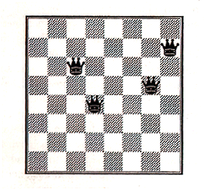
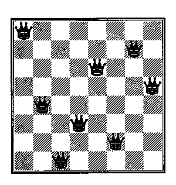

There is, however, some "meat" in this article. Timothy Budd has given me permission to use the Eight Queens problem and solutions presented in his book [Budd 91], which is recommended from time to time by Dean Roehrich on comp.lang.perl.misc. It appealed to me because it deals with Object-Oriented Programming (OOP) from a philosophical perspective, using several languages as examples rather than dwelling on the features of one. This is a useful approach for tackling OOP in Perl, which enables you to program in an OO style without forcing you to.
Budd uses four languages in his first edition: Object Pascal, C++, Objective C, and Smalltalk. The second edition of the book has been expanded to include Java. It's interesting to see how the languages approach OO and how languages like C++ and Objective C, which share a common base language, have taken different routes to OO nirvana.
Budd's book is a useful resource. It has a good glossary which ties together some of the noodles in the soup of OO terminology, and a broad bibliography if you're interested in seeing just how old some of these "new" concepts are.
Another resource is the new edition of Programming Perl [Wall 96], which has sections on packages, objects and modules that expand on the documentation supplied with recent (5.002 and later) versions of Perl. The Perl distribution contains several manual pages relevant to OOP:
perlobj Perl objects
perltie Perl objects hidden behind
simple variables
perlbot Perl OO tricks and examples
These pages assume that you're up to speed with Perl data structures and packages.
This article aims to fill some part of the space between the manual pages and "real" books on OO programming and design by presenting a small but complete example of an object-oriented program. It's little more than an appetizer; as usual with things Perlish (and real) there's more than one way to do it, and a class design that seems natural and appropriate to some may seem outlandish and crazy to others.
I tend to be a little skeptical of techniques that people proclaim will save the software world. The only way to make sure that no more "bad" software is produced is for everyone to stop programming! Merely being object-oriented doesn't make a piece of software good, in spite of assertions from certain members of the computing community.
You could say that OOP is just a collection of programming techniques that allow the designer and programmer to think about a problem in an abstract way, and that OO languages provide constructs supporting those techniques. Despite what some people seem to suggest about OOP's benefits, I have yet to see any evidence that it is miraculous enough to stop me going bald or make peeling my socks off at the end of the day any more pleasant.
Using an OO technique to write some code is no substitute for thinking about the problem at hand during the design phase, no matter how short or informal that phase is. OO techniques might open up avenues that you haven't considered, or suggest new twists and turns in familiar paths. Or it might do nothing at all. Fortunately, Perl doesn't force you to write every program in OO style; it has all of the features but none of the constraints. Many factors might affect how much OO you throw at a project; to me, the three most important factors are:
Different OO languages were designed with different goals in mind, and this has a major impact on the features a language offers as well as the computational expense of OO techniques. In the introduction to their book, Ellis and Stroustrup comment:
Because C++ has been in use for large software projects, stability and compatibility have been important considerations in the development of the language; so has run-time and space efficiency. Time and space overheads above those for C are considered unacceptable for C++.
These aims led to a language quite philosophically different than languages like Smalltalk. The moral? Be aware that your favorite OO language may not be the best for the job at hand.
In some ways, OO facilities can be viewed as an evolutionary step for imperative languages. Three of the four languages in Budd's book are descendants of existing languages and even Java can be considered as a neutered and buffed up descendant of C++. It's a stretch, but you can think of the FILE data structure in C's STDIO (along with the associated routines provided to manipulate FILEs) as a precursor to some of the C based OO languages. It's not too big a stretch to envision STDIO implemented so that instead of:
fprintf (fh, "format %s\n", "string");
you used
fh.fprintf ("format %s\n", "string");
in a C-with-Classes-like language.
Once you start "thinking OO" you'll be able to see how the features available to you in a particular language might be used to help you develop software whether that language be Perl, Java, or Visual Cobol++, much like an understanding of regular expressions allows you to use the various regex tools to their greatest potential.
So, how can you "think OO?" Budd identifies three perspectives as particularly important:
It's a way of viewing the world. The objects in the program can be used in a way that makes computation act as a simulation of the real world (or whatever real world programmers inhabit.) Objects describe the behavior of the thing being simulated, and instances of objects (that is, particular lower-case-o objects that you create, as opposed to the Object definition itself) maintain their state. Objects exhibit behavior when you prod them; in some languages the prod might look like a function call, and in others it might be a message passed to the object.
It's a way of dealing with complexity. OOP offers the programmer another way to abstract information. An object can be a descendant of another object, with differences in behavior and state, or it can simply contain entirely separate objects. In either case, the object need only contain the code distinguishing it from the other objects; the shared code can be delegated to other objects.
It's a way of writing reusable software. Since objects can have well-defined interfaces (read: acceptable ways to prod them and what to expect them to do when prodded) and are responsible for implementing those behaviors, people can write code without having to know what's under the hood. That way, when you inevitably change the internal workings of your object, the people using your objects never even have to know.
There are several levels at which the word "responsibility" can be bandied about. I'll look at the human side of responsibility first. One of Perl's strengths is the way modules and blessed references have made the CPAN (Comprehensive Perl Archive Network) possible; many modules depend on other modules. The tacit assumption that objects will behave properly has encouraged authors to use one another's code, because they trust that objects won't pull any surprises on them.
Some languages enforce policies which make it even easier to reap these benefits. Perl just provides the mechanisms to let you develop OO code - it's your responsibility to choose whether your code makes use of the "unpublished" details of an implementation (say, for speed reasons) or adheres to the published interface. And it's the responsibility of the object creator to make sure that the definitions are clear and unambiguous, and to specify exactly what state and behaviors are accessible via the interface. A well designed object (or class of objects) discourages people from circumventing its interface, and suggests ways in which the interface can be used to extend its capabilities. It takes a good designer to pull this off, but it's an important skill.
Budd describes a technique he calls "Responsibility-Driven Design" to discover classes which can be used to model a situation. He suggests using physical index cards to define responsibilities and classes. The limited space on an index card means that a class design which embodies too much complexity is easy to spot; if you can't describe it in a 3"x5" space, your object is attempting too much. In some situations the division of a system into classes, objects, and responsibilities may be obvious. But it's not always, and Budd's index card system seems like a reasonable method for determining whether your division is appropriate. Personally, I've never had to model anything overly complex, and recently I haven't even collaborated with others on a design, so I can't attest to how well Budd's system works with Perl.
Once again my laziness steps in to save me as I present an example from Budd's book - the Eight Queens problem. On an chessboard (an 8x8 grid), a Queen can attack anything in the same row, column, or diagonal. The problem is this: how can you place eight Queens on a chessboard such that no Queen can attack another? Consider the chessboard below. It has four Queens; no two are in the same row, column, or diagonal; if you can place four more Queens on the chessboard and still satisfy that condition, you'll have solved the Eight Queens problem. Try it!

Figure 1: Board with 4 Queens
I selected the 8 Queens problem because Budd presents full solutions in his book for Smalltalk, C++, and Objective C. My Perl solution is derived from the Objective C version, which seems to be reasonably object-oriented without being too removed from a plain jane solution using linked lists and global functions. Budd's solution resembles a conventional generate and test approach, but the important behaviors have been encapsulated in an object.
In Budd's implementation, each Queen communicates with exactly one of her neighbors. As each Queen is created, it's initialized with a position, and then the resulting setup is checked to see whether it's a valid solution. A Queen does this by asking its left-hand neighbor, "Can I be attacked?" If so, it generates the next position and test that, repeating until a safe position is generated, at which point the Queen replies with an "OK."
Budd's calls his index cards "CRC cards", for Class, Responsibilities, and Collaborators. It's all part of his philosophy of responsibility-driven design, and he touts them early on in his book. Part of the rationale is that if you can't describe the class on a 3" x 5" index card, it's too complex.
The front of a CRC card defines the interface to the object; the back describes the data values used to maintain its state. The front and back of our Queen CRC card are shown here:
|
first initialize row, then find first acceptable solution for self and neighbors next advance row and find next acceptable solution canAttack see whether a position can be attacked by self or neighbors |
|
row current row number (changes) column column number (fixed) neighbor neighbor to left (fixed) |
Our answer masquerades as a Queen in the 9th column, just off the board. To deal with the 0th column, we use a special class of Queen, a Queen::Null, which is a simple Queen with degenerate responses. In addition to the responsibilities outlined on the front of our CRC card, there's a print() responsibility, which prints out its row and column information after asking its neighbors to do the same.
Without further ado, here's the entire program. If it looks too small, that's because the tricky behaviors are hidden inside the Queen and Queen::Null classes.
#!/usr/bin/perl -w
use strict;
require Queen;
require Queen::Null;
my $lastQueen;
my $column;
my $neighbor = new Queen::Null;
foreach $column (1 .. 8) {
$lastQueen = new Queen;
$lastQueen->initialColumn
($column, $neighbor);
$neighbor = $lastQueen;
}
$last Queen->first() and
$lastQueen->print();
The code first generates the special Queen::Null object (new Queen::Null). Next, the Queen objects are instantiated (with new()) and then initialized (with initialColumn()), so that they know which column they inhabit and who their neighbors are. It would have been quite easy to combine instantiation and initialization into the new() routine, and in some applications this might make sense. But in other applications one might want to reinitialize without having to reinstantiate: that is, to go back to square one without having to create the square itself from scratch.
After new() and initialColumn() are used to instantiate and initialize the chessboard, the rightmost Queen is prodded, triggering a flurry of communication until a valid solution is found. At that point the rightmost Queen is prodded in a different way, using the print() method, to print the solution.
Note that Queen::Null has no initializiation method, and that it's derived from the Queen class. (Actually, you can't infer the class relationship from the names alone: the mere fact that Queen and Queen::Null have similar names doesn't necessarily imply a semantic linkage.) Since Queen's new() uses no arguments, we now know that Queen::Null's new also requires no arguments; since one inherits from the other, the two new()s are one and the same. Think about that - if the Queen class had rolled initialization into its new() method, then it might be necessary to override it for Queen::Null in a language with stronger typing than Perl. As usual with Perl, there's more than one way to do it...
The output from the above code: Main Program Output.
The first object generated in the program is the special Queen::Null which is used to guard the 0th column. All it does is supply methods that let the Queen in the 1st column behave sensibly. As a subclass of Queen, it implements the methods on the front of the Queen CRC card: (plus that pesky print().) Here it is:
package Queen::Null;
@ISA = qw(Queen);
sub canAttack {return 0;}
sub first {return 1;}
sub next {return 0;}
sub print {return;}
1;
You can see that Queen::Null implements pretty simple behavior for its responsibilities - the null Queen can't attack anything, and first() always succeeds. If next() is invoked, then we know we're out of possible positions, so it fails. print() is a no-op.
Note that having this special behavior in a Queen::Null object lets us avoid having lots of special cases in the "real" Queen class, described next.
The Queen class is the real "meat" of the program - it's here that methods which store the state of each Queen and implement its behavior are defined.
The new() and initialColumn() methods handle instantiation and initializiation. As with many Perl classes, the new() constructor returns a blessed reference to an anonymous hash. That hash is then used to store instance variables.
sub new {
my $type = shift;
return bless {}, $type;
}
sub initialColumn {
my $self = shift;
$self->{column} = shift;
$self->{neighbor} = shift;
return;
}
Note that initialColumn() initializes only those variables described as "fixed" on the back of the CRC card.
first(), shown on the next page, initializes the row (which varies, unlike the column), and asks its neighbor Queen for a legal position. Then it employs the testOrAdvance() method to determine whether the current position is legal or if it can find a legal position by asking its neighbor to shuffle around a bit. That may cause the neighbor to shuffle about by talking to its neighbor, and so on. As usual, 1 means success and 0 means failure.
The method testOrAdvance() wasn't mentioned on the Queen CRC card, and isn't part of the public interface. Some languages have ways of specifying exactly how private or public a method is. But in Perl, it's the designer's responsibility to document the interface, and the programmer's responsibility to obey. As its name suggests, testOrAdvance() checks to see if its position is threatened by neighbors. If it's safe, it returns a true value. Otherwise, it tries to find the next legal position.
canAttack() is used to ask whether a neighbor (or any of its neighbors) can attack a particular square on the board. The design is such that it's not necessary to check whether there's another Queen in a given column, since the foreach loop in our main program iterates across columns. So we only need to check the rows and the diagonals.
The next() method contains some key information: how many rows there are on the chessboard, and what to do when she needs to wrap around from bottom to top in its search for the next safe square. next() returns 1 if it can find a legal next position, and 0 if it can't. Note that both next() and testOrAdvance() employ recursion; as next() is mentioned on the CRC card, the public might stumble into it. That's why we turn off Perl's $^W variable - so that the normally desirable warning about deep recursion (which we perform intentionally) will never reach the user.
Lastly, there's the print() method that we added to the Budd's published interface on the CRC card. There's nothing particularly inspiring about print(), and in fact my code on the TPJ web site avoids this method entirely, settling instead for a foreach loop appended to the main program that iterates through all of the Queens and display the row and column information with Perl's regular print() function.
Here's the solution generated by my code:
row: 1 column: 1 row: 5 column: 2 row: 8 column: 3 row: 6 column: 4 row: 3 column: 5 row: 7 column: 6 row: 2 column: 7 row: 4 column: 8
which corresponds to this chessboard:

Figure 2: Board with 8 Queens
The OO style I've shown here isn't too distant from the non-OO solution a C or Perl programmer might write. There's nothing magic about object-oriented programming, and I hope that this simple example will whet your appetite for exploring more about OO methodology.
Budd's book is a well-rounded survey of the OO landscape, and Budd doesn't have an axe to grind in favor of any particular language. The exercises from the relevant chapter in Budd's book might be interesting and instructive, as might looking at the solutions he presents in other languages.
If you've enjoyed this article, let me know - I'm stok@psa.pencom.com and if people say enough nice stuff and ask about particular topics they'd like me to ramble about, I'll continue these themes in a series of irregular columns.
[Budd 91] Timothy Budd, An Introduction To Object-Oriented Programming, Addison-Wesley, Reading, MA, 1991. ISBN 0-201-54709-0.
[Ellis 90] Margaret A. Ellis and Bjarne Stroustrup, The Annotated C++ Reference Manual, Addison-Wesley, Reading, MA, 1990. ISBN 0-201-51459-1.
[Wall 96] Larry Wall, Tom Christiansen & Randal L. Schwartz, Programming Perl (2nd Edition), O'Reilly & Associates, Sebastopol, CA, 1996. ISBN 1-56592-149-6.
_ _END_ _
Mike Stok is a hybrid systems administrator / programmer. He has a BS in Natural Sciences (computing, archaeology, psychology, management and electronics) works for PSA, and enjoys beer in his spare time.